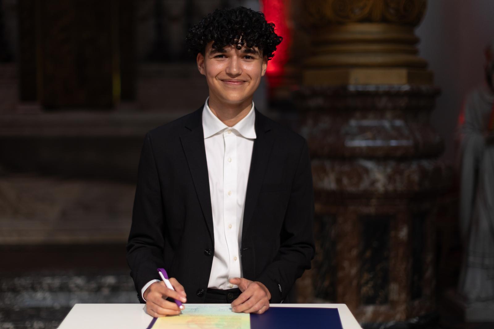

Mijn naam is Ilias Kamil. Ik ben 17 jaar oud en kom uit Amsterdam. Ik zit op de school MediaCollege Amsterdam en volg de opleiding GameDevelopment. Ik heb deze opleiding gekozen omdat mijn interesse in games al vroeg begon en ik wilde begrijpen hoe ze worden ontwikkeld.
Tijdens de opleiding ontdekte ik dat game development uit veel onderdelen bestaat, zoals C#-programmeren, UI, animeren en Shader Graph. Mijn grootste interesse ligt bij C#-programmeren in Unity, omdat ik het leuk vind om de logica achter een game te bouwen. Vooral het oplossen van problemen en het begrijpen waarom code wel of niet werkt, motiveert mij om door te leren.
Mijn professionele doel is om mij verder te ontwikkelen als gameprogrammer, met als ambitie het starten van mijn eigen gamebedrijf. Om dit doel te bereiken wil ik eerst zoveel mogelijk ervaring opdoen binnen de game-industrie. Na mijn stage wil ik doorgroeien door te solliciteren bij Abbey Games, omdat je daar een sterke programmeerbasis ontwikkelt in gameplay. Deze ervaring zie ik als een goede voorbereiding om later door te groeien naar Guerrilla Games. Wanneer ik ongeveer twee tot vier jaar ervaring heb opgedaan, wil ik bij Guerrilla Games solliciteren om mij verder te ontwikkelen binnen een grotere, professionele studio.
Naast werken bij gamebedrijven blijf ik mij richten op het maken van eigen games. In de toekomst wil ik mij vooral ontwikkelen in gameplay-programming en werk ik toe naar het maken van een first-person survival horror game, omdat dit genre mij het meest aanspreekt. Terwijl ik werk in de industrie wil ik alvast beginnen met het brainstormen van ideeën voor mijn eigen bedrijf. Door ervaring en kennis op te doen bij verschillende studio’s wil ik stap voor stap toewerken naar mijn uiteindelijke doel: het starten van mijn eigen gamebedrijf.
